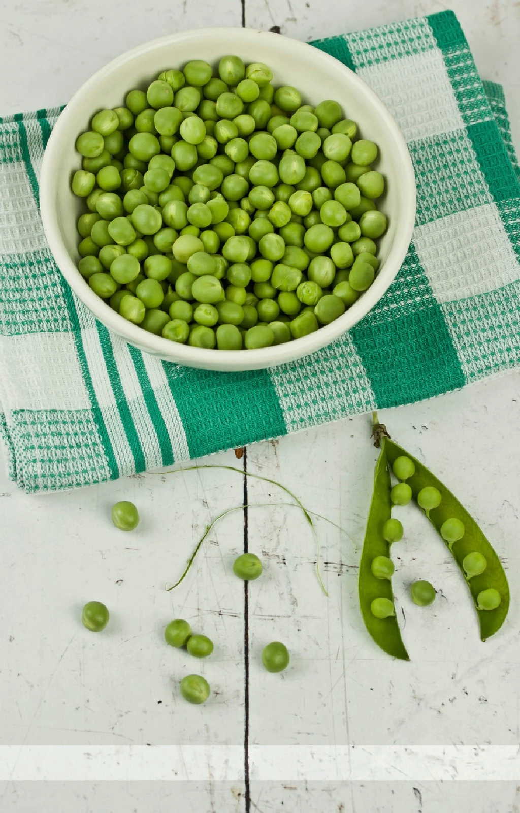
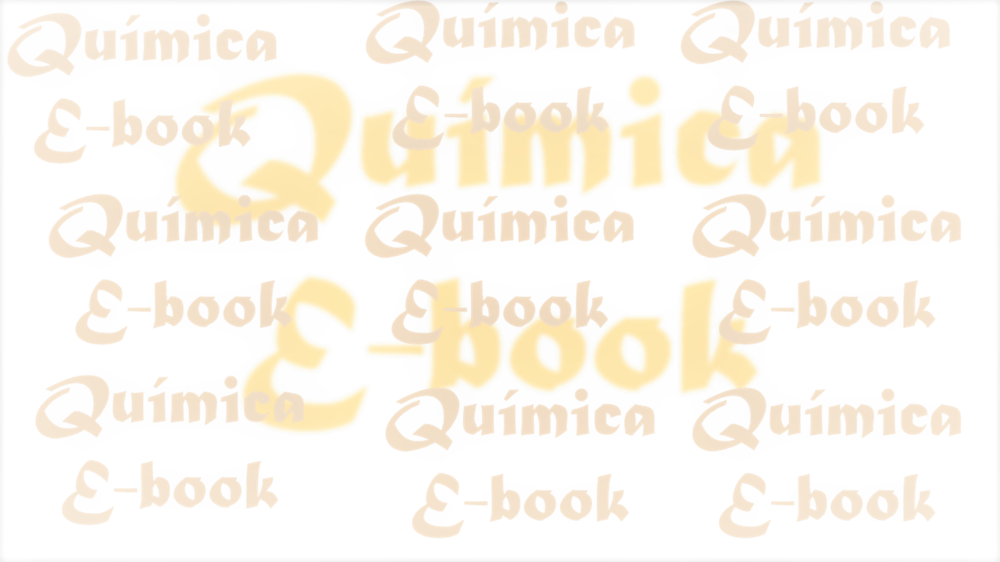

Portada Ebook
Cómo Emprender en Gastronomía
Guía paso a paso sobre costos, regulaciones y claves para lanzar tu proyecto con éxito.
🎧 Escucha la introducción (1 min):
Herramientas de ciencia aplicada a la gastronomía y a la salud.
En este sitio puedes encontrar recursos gratuitos y en promoción para emprender o estudiar en distintos formatos.


Herramientas de ciencia aplicada a la gastronomía y a la salud.
En este sitio puedes encontrar recursos gratuitos y en promoción para emprender o estudiar en distintos formatos.
Guía paso a paso sobre costos, regulaciones y claves para lanzar tu proyecto con éxito.
🎧 Escucha la introducción (1 min):
Manual práctico sobre Buenas Prácticas de Manufactura (BPM) e inocuidad.
Saber másPuntos clave de BPM para mantener tu cocina reglamentaria y segura.
🎧 Resumen en audio (30 seg):
Escríbeme directamente para consultar medios de pago, promociones en combos duales (audio + texto) o asesoramiento personalizado.
Atención directa y envío inmediato de archivos PDF y MP3.